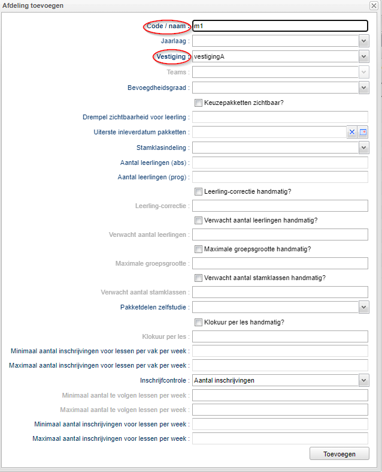
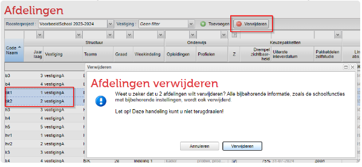
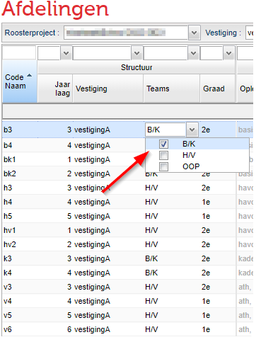
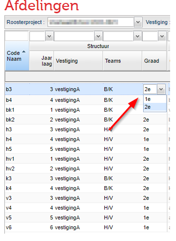
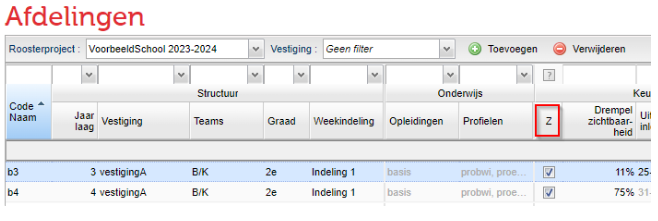
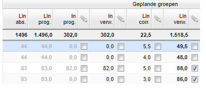
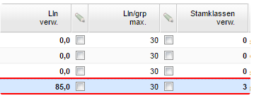
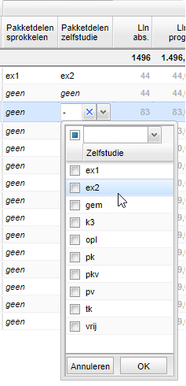
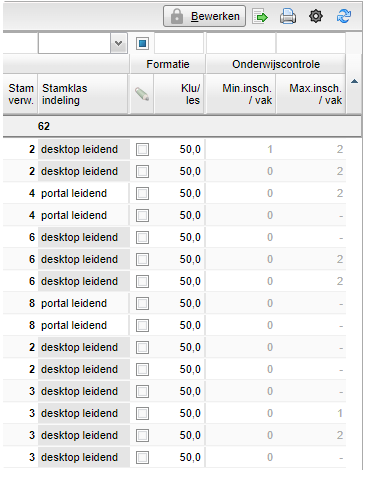

Afdelingen inrichten
in Roostervoorbereiding
In het portal kunt u afdelingen aanmaken, verwijderen en bewerken. Hier legt u niet alleen vast welke afdelingen er zijn in uw project, maar ook eigenschappen zoals de graad, stamklasindeling, splitsingsnorm en de standaard lesvergoeding.
 Onderwijs > Afdelingen
Onderwijs > Afdelingen
Algemeen
Bij het aanmaken van een nieuw project in uw portal, heeft u waarschijnlijk gekozen voor de mogelijkheid deze te baseren op het huidige schooljaar. Dat betekent dat u bij aanvang dezelfde afdelingen ziet als het voorgaande jaar. U zult dan waar nodig afdelingen moeten toevoegen/verwijderen. Mogelijk heeft u een project aangemaakt zonder gebruik te maken van de huidige inrichting. Dan zult u alle afdelingen eerst moeten toevoegen, voordat u de verschillende kolommen kunt gaan bewerken.
Voordat u aan de slag kunt gaan, dient u eerst het Bewerken "aan" te zetten. Dat doet u middels de knop rechts bovenaan.
Afdeling toevoegen
- Ga naar Onderwijs > Afdelingen.
- Klik op de knop
. - Vul tenminste de Code/naam en de vestiging in.
- Klik op de knop
.

Afdeling verwijderen
Warning
Een afdeling verwijderen is in de meeste gevallen lastig. Dit heeft te maken met het feit dat de afdeling elders in het portal al wordt gebruikt. Het is dan niet mogelijk de afdeling hier te verwijderen.
Een afdeling die in het huidige project echter nog niet wordt gebruikt kunt u als volgt verwijderen:
- Selecteer de afdeling(en) die u wilt verwijderen.
- Klik op de knop
en bevestig nogmaals met de knop .

Note
Een afdeling verwijderen die al in gebruik is
Om een afdeling te verwijderen moeten de volgende zaken op orde zijn.
- De afdeling mag geen afdelingsdeelnames van leerlingen meer bevatten.
- Er mogen geen geplande groepen meer aanwezig zijn in de afdeling.
- Er mogen geen lesgroepen aanwezig zijn in de afdeling, verwijder ook de groepen onder Schoolstructuur > Lesgroepen.
- Er mag geen keuze-aanbod meer aanwezig zijn in de afdeling.
- Er mogen geen schoolfuncties (decaan, mentor, teamleider of maatwerkcoördinator ) meer aanwezig zijn in de afdeling.
- De afdeling mag niet meer in een team voorkomen.
- De standaardprognoses mogen niet gevuld zijn. Verwijder zowel de standaardprognoses van en naar de betreffende afdeling. Controleer ook standaardprognoses vanuit andere projecten in het portal.
Jaarlaag
Door een jaarlaag vast te leggen, is het bijvoorbeeld mogelijk een voorzet te geven bij de plausibele overgangen. Alleen overgangen naar een zelfde jaarlaag en één jaarlaag hoger zijn plausibel. U vult een jaarlaag in door te dubbelklikken op de betreffende cel en een getal in te voeren.

Vestiging
Aan iedere afdeling moet een vestiging worden gekoppeld. Mogelijk heeft uw school maar 1 vestiging en is dit dus voor alle afdelingen hetzelfde. Als bijvoorbeeld de onderbouw les krijgt op een andere vestiging, dan kunt u die hier aan de desbetreffende afdeling of afdelingen koppelen.
Teams
U kunt per afdeling aangeven bij welk team of welke teams deze hoort. Dit kan alleen op deze plaats als u reeds teams heeft aangemaakt. Het aanmaken van teams doet u in het portal bij Onderwijs > Schoolstructuur > Teams.
Om een team te koppelen aan een afdeling gaat u naar Onderwijs > Afdelingen. U vult één of meerdere teams in door te dubbelklikken op de betreffende cel en een keuze te maken.
Graad
U kunt aangeven of een afdeling tot de 1e of 2e graads bevoegdheid hoort. Wanneer u dubbelklikt op de betreffende cel, kunt u een keuze maken uit de 1e of 2e graad. Op het moment dat u ook bevoegdheden van docenten vastlegt en de lessen gaat verdelen, wordt duidelijk of een les (on)bevoegd gegeven gaat worden.

Opleidingstype en Profielen
Per portal is er één lijst met alle keuzes. Keuzes kunnen vakken, profielen of opleidingen zijn. Dit wordt bepaald in Beheer > Portal-inrichting > Keuzes. De profielen en opleidingen kunnen bij de keuzeformulieren en de prognoses worden gebruikt. Zowel opleidingen als de profielen zijn niet bewerkbaar in het scherm Afdelingen. De inhoud wordt gevoed door het scherm Onderwijs > Keuze-aanbod.
Zichtbaarheid van pakketten
In de kolom 'Z' kunt u aanvinken of de pakketten voor een bepaalde afdeling zichtbaar zijn voor leerlingen. Dit geldt niet alleen voor de afdelingen waar leerlingen mogen kiezen.

Zichtbaarheidsdrempel keuzeformulieren
Voor de afdelingen waar leerlingen een keuzeformulier moeten invullen, kunt u hier per afdeling aangeven vanaf welk prognosepercentage een keuzeformulier voor leerlingen zichtbaar is. Dit noemen wij de zichtbaarheidsdrempel.
Stel dat de drempel op 75% staat en een leerling is voor 50% geprognosticeerd voor doubleren 3 havo en 50% voor overgang naar 4 havo, dan krijgt deze leerling dus geen keuzeformulier te zien!
Uiterste inleverdatum
In de kolom 'Uiterste inleverdatum' kunt u aangeven tot wanneer leerlingen van de desbetreffende afdeling(en) uiterlijk hun keuzeformulieren mogen invullen.
Let wel: het formulier dient gepubliceerd te zijn door de decaan.
Note
Instellingen voor keuzepakketten
Bij de handleiding voor de decaan, kunt u lezen hoe u naast bovenstaande instellingen per afdeling, meer zaken kunt regelen. Denkt u hierbij aan de publicatie van het keuzeformulier, en de kijk- en bewerkrechten voor de (individuele) leerlingen.
Leerlingaantallen

Leerlingen absoluut
De inhoud van deze kolom is niet bewerkbaar. Het absolute aantal bestaat uit het aantal leerlingen dat voor een bepaald percentage een deelname heeft op de betreffende afdeling.
Leerlingen prognostisch
De inhoud van deze kolom is niet bewerkbaar. Het getal is de som van alle prognoses voor deze afdeling. Gedurende het jaar zou dit aantal dus exact gelijk moeten zijn aan Lln abs. Alleen tijdens de periode van prognoses zullen er verschillen voor kunnen komen.
Instroom prognostisch
De inhoud van deze kolom is niet bewerkbaar. Dit is getal is het aantal leerlingen dat instroomt (zie hiervoor het tabblad: Leerlingen > Prognoses > Instroom)
Instroom verwacht
De inhoud van deze kolom is bewerkbaar. Dit getal is in principe de instroom prognoses, tenzij de kolom handmatig is aangepast.
Leerlingen correctie
De inhoud van deze kolom is bewerkbaar. Het gaat hier om een correctie van leerlingen met een indicatie voor LWOO. Bij Leerlingen > Overzicht kan er aangegeven worden welke leerlingen die indicatie hebben. Bij Beheer > Roosterprojecten > Projectinstellingen kunt u aangeven wat de toeslagfactor is voor de LWOO. Eén leerling met LWOO en een toeslagfactor van 50% levert dus een correctie op van 0,5.
Leerlingen verwacht
De inhoud van deze kolom is bewerkbaar. Het getal in deze kolom wordt bepaald door de som van absolute aantallen + de leerlingen correctie.
Max aantal leerlingen per groep / Aantal verwachte stamklassen

U kunt per afdeling aangeven wat de splitsingsnorm is. Met andere woorden, vanaf welk aantal leerlingen er een extra groep moet worden gepland. In ons voorbeeld is dit 30. De kolom rechts van deze kolom (Stamklassen verwacht), is een resultaat van het verwachte aantal leerlingen en de splitsingsnorm.
Pakketdelen Sprokkelen en Zelfstudie
Mogelijk wilt automatisch de betrokkenheid aangeven bij vakken die gekozen zijn in een bepaald pakketdeel. Een voorbeeld zijn de extra vakken waarvan u afgesproken dat ze niet ingeroosterd worden. Leerlingen volgen eventueel de lessen buiten het rooster om, als zelfstudie vak. Het is dan uiteraard ook niet nodig deze leerlingaantallen mee te laten tellen voor de geplande groepen.
Wanneer u een pakketdeel selecteert door te dubbelklikken op de cel in de kolom Pakketdelen Zelfstudie, worden de leerlingen die een vak in dat deel hebben gekozen niet meegenomen in de te verwachten leerlingaantallen bij de geplande groepen. U kunt hierbij onderscheid maken tussen pakketdelen voor zelfstudie, en pakketdelen voor sprokkelen. Bij sprokkelen laat u het rooster bepalen of een leerling wel of niet wordt ingedeeld. Het pakketdeel voor sprokkelen regelt u uiteraard in de kolom Pakketdelen sprokkelen.

Stamklasindeling
U kunt aangeven of het portal of de desktop leidend is wat betreft de stamklasindeling.
Portal leidend: de stamklasindeling wordt door de betreffende teamleider bepaald. De roostermaker kan vervolgens deze stamklasindeling downloaden.
Desktop leidend: als de desktop leidend is, is het niet mogelijk de stamklasindeling in het portal te bewerken. In dit geval zal de roostermaker in de desktop de stamklasindeling kunnen/moeten bepalen.
Lesvergoeding
U heeft de mogelijkheid de standaard lesvergoeding per afdeling aan te passen. De standaard lesvergoeding stelt u in bij Beheer > Roosterprojecten > Projectinstellingen. Dit wordt vaak door de formatiebeheerder gedaan.
Onderwijscontrole
Als er sprake is van keuzelessen in uw rooster, dan stuurt u bij Onderwijs > Afdelingen op hoeveel uur leerlingen zich mogen inschrijven voor keuzelessen van een bepaald vak ten opzichte van de reguliere lessentabel. Deze waardes stelt u in in de kolom Onderwijscontrole. Deze waarden leveren geen eisen op voor de deelname aan de lessen. Wel ziet u het bij Leerlingen > Inschrijvingen > Weekoverzicht als een leerling niet voldoet aan de voorwaarden.

De inschrijfkaders, waarmee u de eisen voor het aantal inschrijvingen of het aantal lessen per week opgeeft, vindt u in hun eigen menu Onderwijs > Inschrijfkaders. U leest hier meer over op onze handleiding Inschrijfkaders voor leerlingen.
Afspraakdeelname bekijken
Nadat uw leerlingen zich ingeschreven hebben volgens de hierboven ingestelde kaders wilt u controleren hoeveel lessen uw leerlingen gaan volgen. U vindt dit overzicht bij Leerlingen > Inschrijvingen > Weekoverzicht. U selecteert de het juiste roosterproject, vestiging en afdeling (en eventueel mentorgroep) en u krijgt van de betreffende week, per leerling, een overzicht van het aantal lessen wat de leerling gaat volgen. In het overzicht ziet u onderstaande gegevens:
- Aantal lessen met geplande aanwezigheid.
- Dubbele afspraken.
- Het minimaal aantal lessen wat de leerling per week moet volgen (zoals u ingesteld heeft bij de inschrijfkaders).
- Het minimaal aantal optionele lessen waarvoor een leerling zich moet inschrijven.
- Het maximaal aantal optionele lessen waarvoor een leerling zich mag inschrijven.
- Het aantal inschrijvingen voor uw lessen.
- De geplande aanwezigheid voor uw lessen.
Volgende pagina: Vakken en keuzes aanmaken